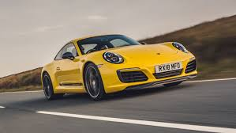
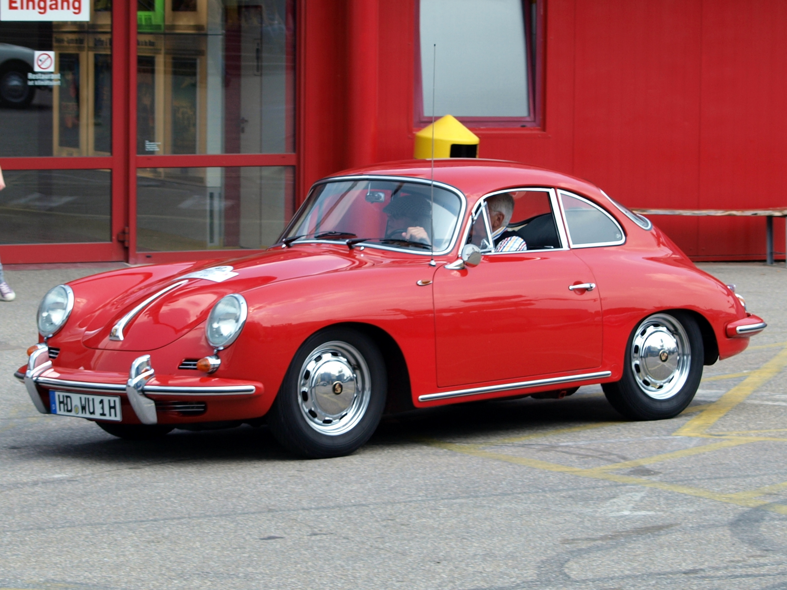
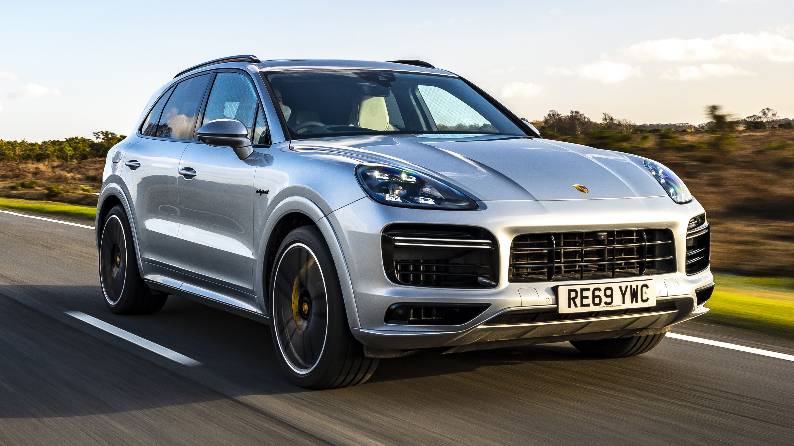
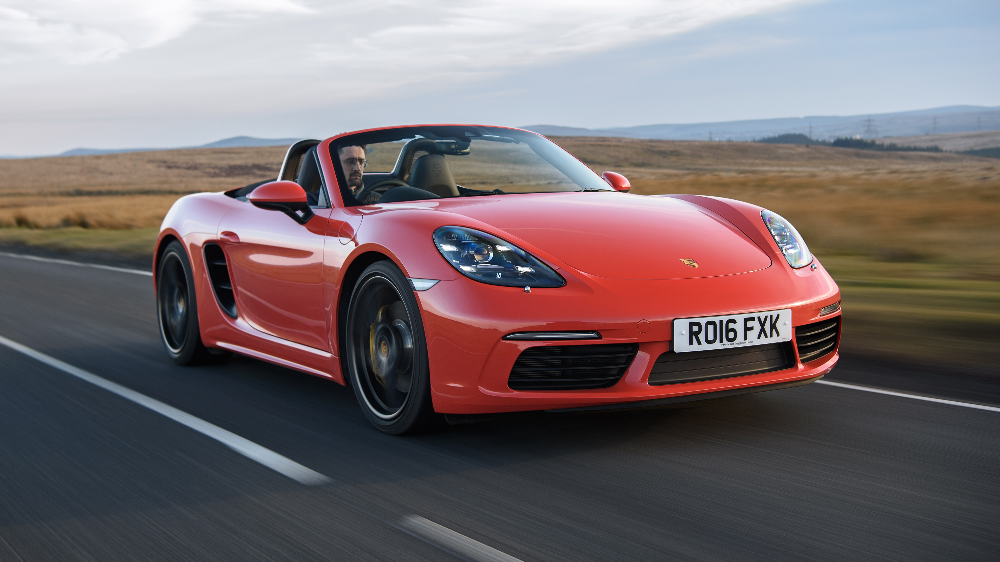
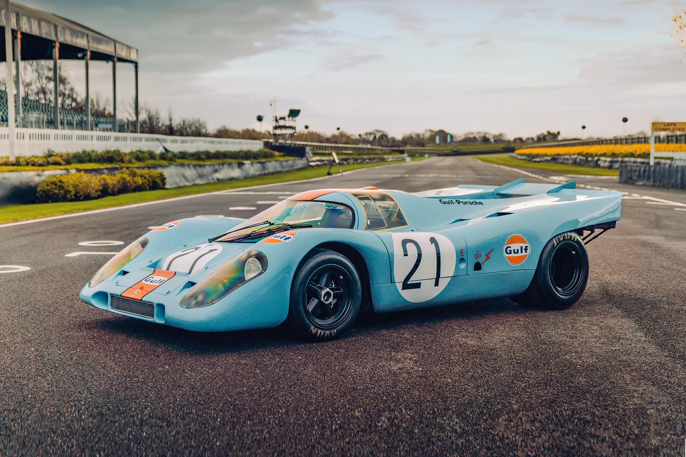
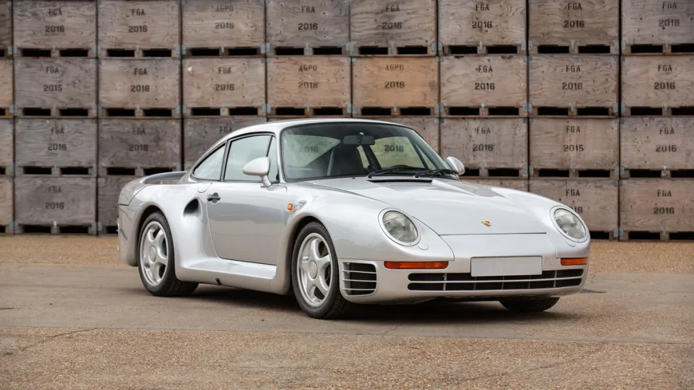
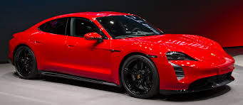
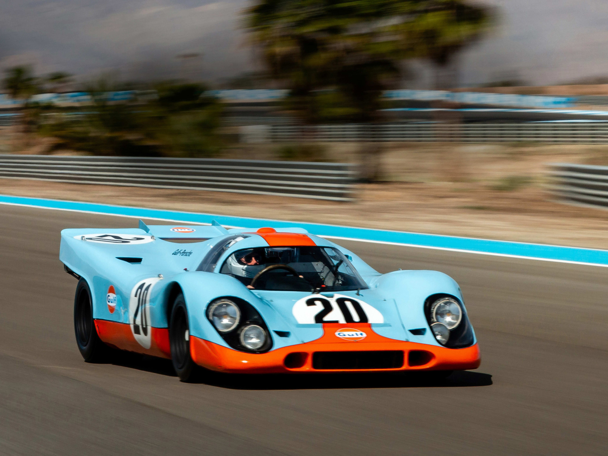

Porsche
There is no substitute
Founded: 1931
Country: Germany
Icon: 911
Sports Car Legend
There is no substitute
Porsche's story begins with Ferdinand Porsche, a brilliant engineer who designed the Lohner-Porsche electric car in 1900, worked for Mercedes, and created the Volkswagen Beetle. In 1931, he founded "Dr. Ing. h.c. F. Porsche GmbH" in Stuttgart – an engineering consultancy, not a car manufacturer.
The company worked on many projects, including the Auto Union Grand Prix cars. During World War II, they designed military vehicles including the Kübelwagen and the massive Maus tank. After the war, Ferdinand was imprisoned, and the company's future was uncertain.
Ferdinand's son Ferry Porsche took over and made a crucial decision: he would build his own car. "I couldn't find the sports car of my dreams, so I built it myself." The result was the 356, the first Porsche-badged car. Built in Gmünd, Austria, with Beetle-based mechanicals, it established the Porsche formula: lightweight, air-cooled rear engine, superb handling.
The 356 evolved and succeeded, but the 1963 911 changed everything. Designed by Ferry's son Ferdinand Alexander "Butzi" Porsche, the 911 defined the sports car for generations. Its distinctive shape, rear-engine layout, and flat-six engine created a legend.
Through the 1970s and 1980s, Porsche expanded with front-engine cars like the 924, 944, and 928. Purists complained, but these cars saved the company financially. The 959 (1986) was a technological masterpiece – all-wheel drive, sequential turbo, advanced electronics – that set the stage for future supercars.
The 1990s brought crisis. Sales plummeted, quality suffered, and Porsche nearly became a takeover target. The 1997 Boxster (based on the 911 platform) and the 1999 996 (first water-cooled 911) revitalized the company. But the real savior was the 2002 Cayenne SUV – hated by purists but massively profitable.
Today, Porsche is more successful than ever. The Cayenne, Macan, Panamera, and Taycan electric sedan have expanded the brand while the 911 remains the heart. Porsche consistently achieves the highest profit margins in the industry, proving that a pure sports car company can thrive by adapting.
"I couldn't find the sports car of my dreams, so I built it myself."- Ferry Porsche

8 generations | 1963-present
The definitive sports car. For over 60 years, the 911 has evolved while maintaining its core identity: rear-engine, flat-six, and unmistakable silhouette. It's the benchmark in its segment.

1948-1965
The first Porsche. Based on Beetle components but completely reimagined. Lightweight, aerodynamic, and beautiful – established the Porsche formula.

2002-present
The controversial SUV that saved Porsche. Hated by purists but massively successful, funding 911 development and expanding the brand globally.

1996-present
The affordable mid-engine roadster. Revived Porsche's fortunes in the 1990s and brought new buyers to the brand.

1969-1973
The Le Mans legend. First overall win at Le Mans (1970), starred in Steve McQueen's "Le Mans." One of the most beautiful race cars ever.

1986-1989
The technological masterpiece of the 1980s. All-wheel drive, sequential turbos, advanced electronics. The first supercar with everyday usability.

2003-2006
The V10 supercar with a manual transmission. A raw, analog experience before the digital age. Sounded like Formula 1.

2019-present
Porsche's first electric car. Proved that EVs can handle, perform, and feel like Porsches. Over 750 hp in Turbo S.
The 911 is the heart of Porsche. For over 60 years, it has evolved while maintaining its soul. Each generation tells a story.
Originally called 901, but Peugeot claimed rights to three-digit numbers with zero. Renamed 911. 2.0L flat-six, 130 hp.
Impact bumpers, larger engines, first turbos. The 930 Turbo (1975) was the "widowmaker" – brutal, challenging, legendary.
First major redesign. All-wheel drive Carrera 4, Tiptronic automatic. Integrated bumpers, more modern.
The last air-cooled 911. Beautiful design, advanced multi-link rear suspension. The most desirable modern 911 for purists.
First water-cooled 911. Controversial "fried egg" headlights. More refined, faster, but purists mourned air-cooled.
Return to round headlights. Perfected water-cooled formula. GT3, GT2, Turbo models became benchmarks.
Larger, lighter, more efficient. First with 7-speed manual. Widest range of variants in history.
Wider, more technological, yet still unmistakably 911. Hybrid versions coming, turbocharged across range.
Over 1 million 911s have been built – more than any other sports car. It's the definitive sports car, the benchmark, the icon.

The heart of Porsche for 35 years. From 2.0L (130 hp) to 3.8L (450 hp in 993 GT2). Character, sound, and soul.
996 introduced water-cooling. More power, refinement, and reliability. Current 4.0L GT3 engines rev to 9,000 rpm.
930 Turbo (1975) was first. Now dominates 911 range – Carrera S, Turbo, Turbo S. Massive torque, everyday usability.
Cayenne, Panamera, 928. Porsche's V8s are powerful and refined. Current 4.0L twin-turbo used across VW Group.
Carrera GT's 5.7L V10 derived from aborted F1 program. 603 hp, 8,000 rpm, one of the greatest engine sounds.
Taycan's permanent magnet synchronous motors. Up to 750 hp, 2.6s 0-60, 800V architecture. The future.
Porsche has won over 30,000 races – more than any other manufacturer. The 917, 956, 962, and 919 Hybrid are legends. Customer racing is core to Porsche – there are more Porsche race cars than any other brand.
